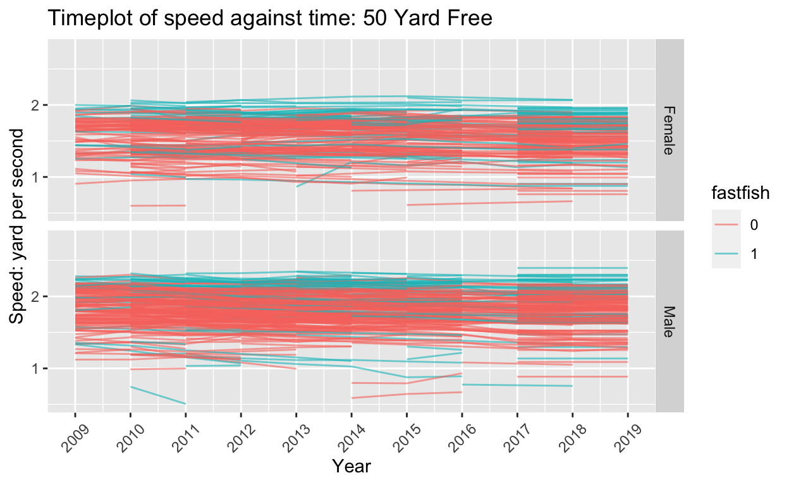
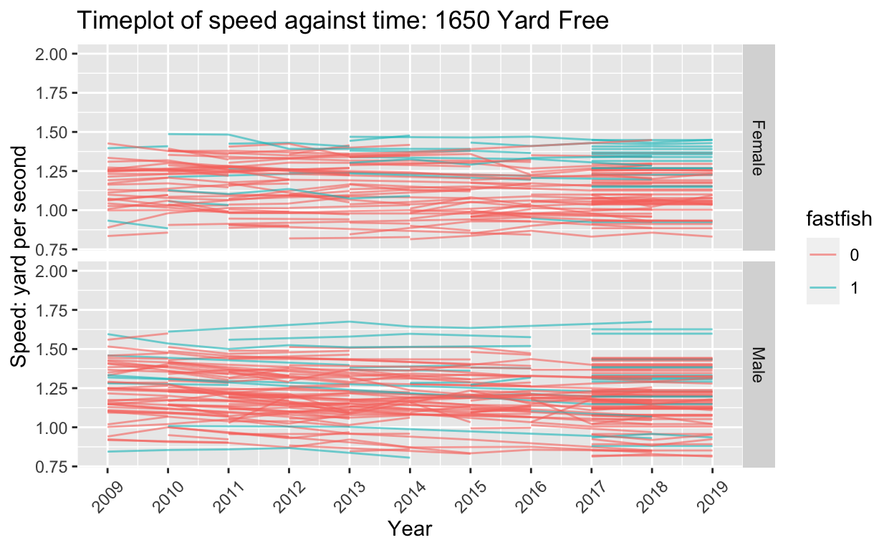
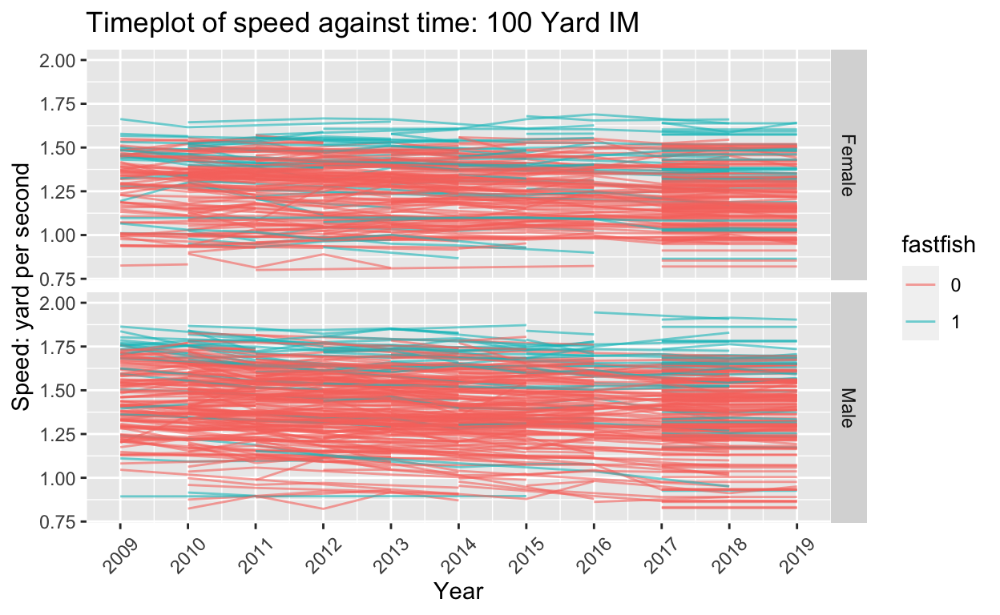

Cross sectional analysis & longitudinal analysis looking at participation and the association with aging
I am going to dive deeper into some formal analysis, with the hope to answer my study questions. I will begin with some cross-sectional analysis (a snapshot of the data, one dimension of time), where I used past performance and attendance to predict participation in 2019. I then moved into longitudinal analysis, where I am more interested in the association between aging (change in time) and meet performance. I will walk through different model specifications, outputs and my own interpretations. Lastly, I will discuss my limitations and future directions.
***
The dataset I worked with is a cleaned dataset (for the detail of cleaning - see github code) of swimming speed measurements (yard per second) from the NELMSC SCY Championship database. The key variables include:
yrdpersec = yard per second, the outcome, is calculated as distance (in yards)/seconds usedfastfish = indicator for fish type: 1 for those who on average, get 1st, 2nd or 3rd place per race, 0 for others (A 570:2989 ratio)axis = indicator for swimmer type: Long-axis swimmers are those who swam more long axis strokes (free style + back stroke) than short axis strokes (butterfly + breaststroke); Short-axis swimmers are those who swam more short axis strokes than long axis strokes; If there is a draw (# of long-axis stroke events = # of short-axis stroke events), then is will be determined by whether they swam the butterfly or not. If they did, then they will be a short-axis swimmer; IMers are those who swam all five events, no matter how many times they swam.gender = Males and Femaleseventname_full = a time-varying variable measuring the event they enteredYear = Time indicator, ranges from 2009 - 2019baseage = Baseline age indicator, recorded as the age when first entered the NELMSC SCY ChampionshipThe overall study question for cross-sectional analysis is to see whether a swimmers’ past participation pre-2019, gender, fish type, stroke type and baseline age (all are time-invariant variables) predicts/associated with the participation in 2019.
Let me put forward some limitations: I agree that to answer this question, we lost many potentially important variables, such as move indicator, health status and helpful time varying variables. We cannot interpret those models as predictive models as I will strongly question the predictive power. Let’s serve those cross-sectional analysis an insight of how swimmers’ characteristics on average associate with participation in 2019.
Participation in 2019 (recorded as 0/1)
#### Predictors are: * par_byyear # of time participated in the swim meet prior to 2019 - regardless of the events participated, so max per person is 1 per year * gender * fastfish * axis
* baseage
Aside: I also tried to define “past participation” as 1 event entry = 1 participation (so that there will be multiple participations per year per person). Using either of them do not change my result. I ended up only use the variable par_byyear, where 1 meet entry (instead of event entry) = 1 participation (to that max 1 participation per year per person)
For more details about those variables, you can visit in the visualization page (in tab 2)
After taking a few look of my data, I firstly use one variable at a time and see how it will change the coefficient using unconditional logistic regression.
| Simple model A | Simple model B | Simple model C | Simple model D | Simple model E | Full model | |||||||
|---|---|---|---|---|---|---|---|---|---|---|---|---|
| Predictors | Odds Ratios | CI | Odds Ratios | CI | Odds Ratios | CI | Odds Ratios | CI | Odds Ratios | CI | Odds Ratios | CI |
| intercept | 0.09 | 0.07 – 0.10 | 0.07 | 0.06 – 0.08 | 0.03 | 0.02 – 0.04 | 0.07 | 0.05 – 0.10 | 0.15 | 0.12 – 0.19 | 0.08 | 0.04 – 0.13 |
| Gender-Male (ref=Female) | 0.91 | 0.71 – 1.16 | 0.84 | 0.65 – 1.09 | ||||||||
| Fastfish (ref=others) | 1.83 | 1.37 – 2.42 | 1.57 | 1.16 – 2.10 | ||||||||
| Base age | 1.02 | 1.02 – 1.03 | 1.03 | 1.02 – 1.04 | ||||||||
| Swimmer type - long axis (ref=IMer) | 1.20 | 0.86 – 1.72 | 0.67 | 0.47 – 0.99 | ||||||||
| Swimmer type - short axis (ref=IMer) | 1.02 | 0.66 – 1.60 | 0.58 | 0.36 – 0.93 | ||||||||
| Past participation | 0.71 | 0.62 – 0.79 | 0.65 | 0.57 – 0.73 | ||||||||
| Observations | 3559 | 3559 | 3559 | 3559 | 3559 | 3559 | ||||||
| R2 Tjur | 0.000 | 0.005 | 0.009 | 0.000 | 0.013 | 0.034 | ||||||
From the table we can see that the direction and strength of some predictors did not change too much from “single model” to a full model. Interestingly, before adjustment, the swimmer type – long and short axis stroke swimmers, comparing to IMers, were more likely to participate in the swim meet in 2019. While after adjusting for others, they became less likely and the coefficients became significant. Since this is an associational model, I would not use the word “confounding”. What I can tell is that, the swimmer type is correlated with other characteristics, and that correlation created noise when we only looking at the simple models.
Let’s just look at the full model for now.
gender.f + fastfish + baseage + axis.final2 + par_byyear, \[\log\left(\frac{p_{par2019}}{1 - p_{par2019}}\right) = \beta_0 + \beta_1Gender+ \beta_2FastFish + \beta_3BaseAge + \beta_4Swimmer Type + \beta_5NumberOfPastParticipation \]
Surprisingly, in the fully adjusted model, all the variables are significantly associated with participation in 2019 excepting gender. Being a fast fish, after conditioning on other variables, seems to have a strong association with participations (OR=1.57, 95% CI: 1.16 – 2.10). Although baseline age is significantly associated with the outcome, the effect size is not that big (OR=1.03). Another strong association is the past participation. The more people participated in the past meet is associated with the less odds of participating in 2019 (OR=0.65, 95% CI: 0.57 – 0.73).
I feel the result being understandable. It is good to see that conditioning on other variables, age and gender does not have too much relationship with the participation in 2019.
Those who on average placed the top 3 in their game are for sure more likely to do it again. The negative association with the past participation may be attributed to the omitted variables.
reference: PHS 2000A Lab 11: Longitudinal Analysis, 2018 ### Step 0. Data preparation To reduce the time occastion (because the more time points we have, we actually lost power by imposing the unrestricted correlation matrix), we need to reduce the # of measurements and # or observations. Now we need to construct a data that has a “balanced” design - each individual should be measured at the smae # of occastions.
To get an idea of what our swimmer’s trajectories look like as the year goes from 2009 to 2019, I plotted the speed trajectories for three events of interest:
+ 50 Freestyle: I use this to evaluate the speed of sprinting + 1650 Freestyle: I use this to evaluate the speed of long-distance swimming
+ 100 IM: I use this to evaluate the speed of strokes

From the figures, it seems that there are not very much between individual variations among non-fast fishes (so non-fast fishes are a more homogenous group), but there are lots of between and within individual variations among fast fishes, which can be contributed by the baseline age. Since this is a longitudinal data, we will for sure observe within individuals and between individual speed difference. We can account for this with a random intercept and/or a random slope.
Ideally: Assuming that everyone’s speed changes in the same way over time, but that some people’s trajectories are going to be shifted higher or lower depending on their gender, baseline age (at their first entry to the race), swimmer type, and their “fish type”.
We also might be interested in knowing how much people’s trajectories differ from one another: are speed trajectories extremely variable, or does everyone basically experience the same change as the year goes up (people aging)?
To answer these questions, we can add a random slope for time, and examine the G matrix it gives us.
I will fit three models for each event (start with very simple):
Again, here are our models:
\[Y_{ij} = \beta_0 + b_{0i} + e_{ij}\] where i denotes individuals and j denotes time. We also assume that \(e_{ij} \sim \mathrm{N} (0,\sigma^2_e)\) and \(b_{0i} \sim \mathrm{N} (0,\sigma^2_{b0i})\)
where i denotes individuals and j denotes time. We also assume that \(e_{ij} \sim \mathrm{N} (0,\sigma^2_e)\) and \[\left[\begin{array} {rrr} b_0 \\ b_1 \\ \end{array}\right] \sim MVN (0,\left[\begin{array} {rrr} \sigma^2_{b0} & \sigma_{b0b1} \\ \sigma_{b0b1} & \sigma^2_{b1} \\ \end{array}\right])\]
\[Y_{ij} = \beta_0 + b_{0i} + (\beta_1 + b_{1i})year_{ij} + \beta_iZ_i+ e_{ij}\]
Where \(Z_i\) are the time-invariant variables. Similarly: \[e_{ij} \sim \mathrm{N} (0,\sigma^2_e)\]
\[\left[\begin{array} {rrr} b_0 \\ b_1 \\ \end{array}\right] \sim MVN (0,\left[\begin{array} {rrr} \sigma^2_{b0} & \sigma_{b0b1} \\ \sigma_{b0b1} & \sigma^2_{b1} \\ \end{array}\right])\]
In reality: I soon found out that by adding year as a random and fixed effect, the degree of freedom (df) lost quickly. The more years and the more people we have in the mixed model, the less df we have, and the less likely the model converges.
So, I have to give up the original ideas, but moving to models with random intercept only. I also have to further subset my data to people who swam more than 3 times during the past 10 years, which of course introduced selection bias. For the purpose of this preliminarily analysis, please forgive me.
The final model is written as: \[Y_{ij} = \beta_0 + b_{0i} + \beta_1year_{ij} + \beta_iZ_i+ e_{ij}\]
\[e_{ij} \sim \mathrm{N} (0,\sigma^2_e)\] \[b_{0i} \sim \mathrm{N} (0,\sigma^2_{b0i})\]
| ydpersec | ydpersec | |||||
|---|---|---|---|---|---|---|
| Predictors | Estimates | CI | p | Estimates | CI | p |
| (Intercept) | 17.81095 | 15.74136 – 19.88055 | <0.001 | 9.07295 | 6.01754 – 12.12836 | <0.001 |
| Year | 0.21849 | 0.17016 – 0.26683 | <0.001 | 0.21906 | 0.17058 – 0.26755 | <0.001 |
| gender.f [Male] | 0.29068 | 0.25062 – 0.33075 | <0.001 | 15.85612 | 11.77991 – 19.93234 | <0.001 |
| fastfish [1] | -0.00780 | -0.00883 – -0.00677 | <0.001 | -0.00346 | -0.00498 – -0.00194 | <0.001 |
| axis.f [long-axis] | -0.01218 | -0.01362 – -0.01074 | <0.001 | -0.01219 | -0.01364 – -0.01074 | <0.001 |
| axis.f [short-axis] | -0.00945 | -0.09561 – 0.07672 | 0.830 | -0.00737 | -0.09381 – 0.07906 | 0.867 |
| baseage | 0.00322 | -0.03721 – 0.04364 | 0.876 | 0.00302 | -0.03754 – 0.04357 | 0.884 |
| Year * gender.f [Male] | -0.00773 | -0.00975 – -0.00571 | <0.001 | |||
| Random Effects | ||||||
| σ2 | 0.00 | 0.00 | ||||
| τ00 | 0.04 UniqueID | 0.04 UniqueID | ||||
| ICC | 0.95 | 0.96 | ||||
| N | 365 UniqueID | 365 UniqueID | ||||
| Observations | 1602 | 1602 | ||||
| Marginal R2 / Conditional R2 | 0.564 / 0.980 | 0.563 / 0.981 | ||||
| ydpersec | ydpersec | |||||
|---|---|---|---|---|---|---|
| Predictors | Estimates | CI | p | Estimates | CI | p |
| (Intercept) | 10.6875 | 8.1949 – 13.1800 | <0.001 | 4.7380 | 0.9579 – 8.5181 | 0.014 |
| Year | 0.1587 | 0.1268 – 0.1906 | <0.001 | 0.1590 | 0.1270 – 0.1910 | <0.001 |
| gender.f [Male] | 0.1152 | 0.0903 – 0.1401 | <0.001 | 10.4202 | 5.4535 – 15.3868 | <0.001 |
| fastfish [1] | -0.0046 | -0.0058 – -0.0033 | <0.001 | -0.0016 | -0.0035 – 0.0003 | 0.090 |
| axis.f [long-axis] | -0.0078 | -0.0087 – -0.0069 | <0.001 | -0.0078 | -0.0088 – -0.0069 | <0.001 |
| axis.f [short-axis] | 0.0060 | -0.0726 – 0.0846 | 0.882 | 0.0115 | -0.0674 – 0.0903 | 0.775 |
| baseage | -0.0212 | -0.0485 – 0.0061 | 0.127 | -0.0213 | -0.0486 – 0.0061 | 0.128 |
| Year * gender.f [Male] | -0.0051 | -0.0076 – -0.0027 | <0.001 | |||
| Random Effects | ||||||
| σ2 | 0.00 | 0.00 | ||||
| τ00 | 0.02 UniqueID | 0.02 UniqueID | ||||
| ICC | 0.96 | 0.97 | ||||
| N | 646 UniqueID | 646 UniqueID | ||||
| Observations | 1188 | 1188 | ||||
| Marginal R2 / Conditional R2 | 0.364 / 0.977 | 0.363 / 0.978 | ||||
| ydpersec | ydpersec | |||||
|---|---|---|---|---|---|---|
| Predictors | Estimates | CI | p | Estimates | CI | p |
| (Intercept) | 13.1059 | 11.7248 – 14.4870 | <0.001 | 6.5111 | 4.4572 – 8.5650 | <0.001 |
| Year | 0.2136 | 0.1882 – 0.2391 | <0.001 | 0.2143 | 0.1888 – 0.2398 | <0.001 |
| gender.f [Male] | 0.2173 | 0.1976 – 0.2370 | <0.001 | 11.8843 | 9.1533 – 14.6152 | <0.001 |
| fastfish [1] | -0.0057 | -0.0064 – -0.0050 | <0.001 | -0.0024 | -0.0034 – -0.0014 | <0.001 |
| axis.f [long-axis] | -0.0102 | -0.0109 – -0.0095 | <0.001 | -0.0102 | -0.0109 – -0.0095 | <0.001 |
| axis.f [short-axis] | 0.0335 | 0.0033 – 0.0637 | 0.030 | 0.0339 | 0.0036 – 0.0641 | 0.028 |
| baseage | -0.0101 | -0.0308 – 0.0107 | 0.341 | -0.0106 | -0.0314 – 0.0102 | 0.317 |
| Year * gender.f [Male] | -0.0058 | -0.0071 – -0.0044 | <0.001 | |||
| Random Effects | ||||||
| σ2 | 0.00 | 0.00 | ||||
| τ00 | 0.02 UniqueID | 0.02 UniqueID | ||||
| ICC | 0.96 | 0.96 | ||||
| N | 858 UniqueID | 858 UniqueID | ||||
| Observations | 2600 | 2600 | ||||
| Marginal R2 / Conditional R2 | 0.593 / 0.982 | 0.594 / 0.983 | ||||
Something we also want to see is so called ICC: the ratio of the between-individual variance to the total variance is called the Intraclass Correlation. Here ICC=0.95, so we have more variation between individuals than within individuals. So we probability is correct! A random slope is not necessary!
A work by Futu Chen
She is a second year PhD student at Harvard Univeristy, studying Population Health Sciences - Environmental Epidemiology track
She swims with Boston University Masters Swim (BUMS), and you can find her in the slowest lane (meh…)